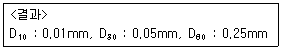
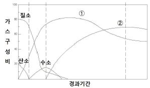
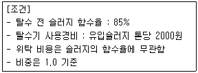
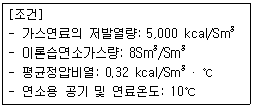
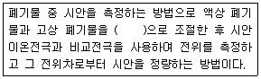
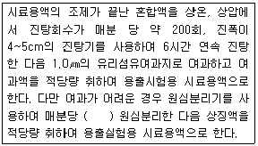
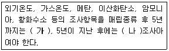
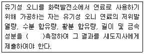
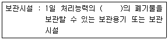

폐기물처리기사 (2014-03-02 기출문제)
1과목: 폐기물 개론
1. X90=3.0 cm로 도시폐기물을 파쇄하고자 할 때, 즉 90% 이상을 3.0cm보다 작게 파쇄하고자 할 때 Rosin-Rammler 모델에 의한 특성입자크기는? (단, n = 1로 가정 )
- 1.30 cm
- 1.42 cm
- 1.74 cm
- 1.92 cm
(정답률: 79%)

2. 투입량이 1.0t/hr이고, 회수량이 600kg/hr(그 중 회수대상물질은 550kg/hr)이며 제거량은 400kg/hr (그 중 회수대상물질은 70kg/hr)일 때 선별효율은? (단, Worrell식 적용)
- 77%
- 79%
- 81%
- 84%
(정답률: 64%)
3. 인구 1천만명인 도시를 위한 쓰레기 위생매립지 (매립용량 100,000,000m3)를 계획하였다. 매립후 폐기물의 밀도는 500kg/m3이고 복토량은 폐기물:복토부피비율로 5:1이며 해당 도시 일인 일일 쓰레기 발생량이 2kg일 경우 매립장의 수명은 몇 년 인가?
- 5.7년
- 6.8년
- 8.3년
- 14.6년
(정답률: 35%)
4. 쓰레기를 압축시켜 부피감소율이 55%인 경우 압축비는?
- 약 2.2
- 약 2.8
- 약 3.2
- 약 3.6
(정답률: 82%)
5. 함수율 95%의 슬러지를 함수율 80%인 슬러지로 만들려면 슬러지 1ton당 얼마의 수분을 증발시켜야 하는가? (단, 비중은 1.0 기준)
- 750kg
- 650kg
- 550kg
- 450kg
(정답률: 69%)
6. 수분함량이 20%인 쓰레기의 수분함량을 10%로 감소시키면 감소 후 쓰레기 중량은 처음 중량의 몇 %가 되겠는가? (단, 쓰레기의 비중은 1.0 기준)
- 87.6%
- 88.9%
- 90.3%
- 92.9%
(정답률: 77%)
7. 쓰레기를 체분석하여 다음과 같은 결과를 얻었다. 곡률계수는? (단, D10, D30, D60 은 쓰레기 시료의 체중량통과백분율이 각각 10%, 30%, 60%에 해당되는 직경임)

- 0.5
- 0.85
- 1.0
- 1.25
(정답률: 80%)
8. 3.5%의 고형물을 함유하는 슬러지 300m3를 탈수시켜 70%의 함수율을 갖는 케이크를 얻었다면 탈수된 케이크의 양은 몇 m3인가? (단, 슬러지의 밀도는 1ton/m3이다.)
- 35m3
- 40m3
- 45m3
- 50m3
(정답률: 67%)
9. 폐기물에 함유된 유용 성분을 분리해 내기 위해 1000kg의 폐기물을 처리하여 700kg과 300kg으로 분류하였다. 이들 각 폐기물에 함유된 유용성분의 함량을 조사 하였더니 각각의 무게의 30% 와 0.15%를 차지하고 있음을 알았다. 그러면 전체 폐기물에 함유되어 있는 유용성분의 함량은 약 몇 %(무게 기준)인가?
- 21%
- 27%
- 31%
- 34%
(정답률: 55%)
10. 다음 중에서 쓰레기 발생량 조사방법이 아닌 것은?
- 적재차량 계수분석법
- 직접계근법
- 물질수지법
- 경향법
(정답률: 75%)
11. 쓰레기 수거노선 설정요령으로 옳지 않은 것은?
- 지형이 언덕인 경우에는 내려가면서 수거한다.
- U자 회전을 피하여 수거한다.
- 아주 많은 양의 쓰레기가 발생되는 발생원은 하루 중 가장 나중에 수거한다.
- 가능한 한 시계 방향으로 수거노선을 설정한다.
(정답률: 76%)
12. 인구 15만명, 쓰레기발생량 1.4kg/인·일, 쓰레기 밀도 400kg/m3, 일일 운전시간 6시간, 운반거리 6km, 적재용량 12m3, 1회 운반 소요시간 60분(적재시간, 수송시간 등 포함)일 때 운반에 필요한 일일소요 차량대수는? (단, 대기 차량 포함, 대기 차량 3대, 압축비 2.0)
- 6
- 7
- 8
- 11
(정답률: 63%)
13. 쓰레기 선별에 사용되는 직경이 5.0m 인 트롬멜 스크린의 최적속도는?
- 약 9 rpm
- 약 11 rpm
- 약 14 rpm
- 약 16 rpm
(정답률: 72%)
14. 물렁거리는 가벼운 물질로부터 딱딱한 물질을 선별하는데 사용하며 경사진 콘베이어를 통해 폐기물을 주입시켜 천천히 회전하는 드럼 위에 떨어뜨려서 분류하는 것은?
- Stoners
- Jigs
- Secators
- Table
(정답률: 74%)
15. 청소상태의 평가방법에 관한 설명으로 옳지 않은 것은?
- 지역사회 효과지수는 가로 청소상태의 문제점이 관찰되는 경우 각 10점씩 감점한다.
- 지역사회 효과지수는 가로 청결상태의 scale은 1~10로 정하여 각각 10점 범위로 한다.
- 사용자 만족도 지수는 서비스를 받는 사람들의 만족도를 설문조사하여 계산되며 설문 문항은 6개로 구성되어 있다.
- 사용자 만족도 설문지 문항의 총점은 100점이다.
(정답률: 73%)
16. 슬러지 수분 중 가장 용이하게 분리할 수 있는 수분의 형태로 옳은 것은?
- 모관결합수
- 세포수
- 표면부착수
- 내부수
(정답률: 65%)
17. 40ton/hr 규모의 시설에서 평균크기가 30.5cm인 혼합된 도시폐기물을 최종크기 5.1cm로 파쇄하기 위한 동력은? (단, 평균크기 15.2cm에서 5.1cm로 파쇄하기 위하여 필요한 에너지 소모율은 14.9kW·hr/ton 이며 킥의 법칙을 적용함)
- 약 380 kW
- 약 580 kW
- 약 780 kW
- 약 980 kW
(정답률: 63%)
18. 1000세대(세대 당 평균 가족 수 5인)인 아파트에서 배출하는 쓰레기를 3일마다 수거하는데 적재용량 11.0m3의 트럭 5대(1회 기준)가 소요된다. 쓰레기 단위 용적당 중량이 210kg/m3이라면 1인 1일당 쓰레기 배출량은?
- 2.31 kg/인·일
- 1.38 kg/인·일
- 1.12 kg/인·일
- 0.77 kg/인·일
(정답률: 52%)
19. 폐기물 차량 총중량이 24,725kg, 공차량 중량이 13,725kg이며, 적재함의 크기 L:400cm, W:250cm, H:170cm 일 때 차량 적재 계수(ton/m3)는?
- 0.757
- 0.708
- 0.687
- 0.647
(정답률: 70%)
20. 인구 500,000인 어느 도시의 쓰레기 발생량 중 가연성이 60% 라고 한다. 쓰레기 발생량이 1.2kg/인·일 이고, 밀도는 0.8 ton/m3, 쓰레기차의 적재용량이 15m3 일 때, 가연성 쓰레기를 운반하는데 필요한 차량은? (단, 차량은 1일 1회 운행 기준)
- 50대/일
- 30대/일
- 20대/일
- 10대/일
(정답률: 72%)
2과목: 폐기물 처리 기술
21. 합성차수막인 CSPE에 관한 설명으로 옳지 않은 것은?
- 미생물에 강하다.
- 강도가 약하다.
- 접합이 용이하다.
- 산과 알칼리에 약하다.
(정답률: 60%)
22. 처리용량이 50㎘/day인 혐기성 소화식 분뇨처리장에 가스저장탱크를 설치하고자 한다. 가스 저류시간을 8시간으로 하고 생성 가스량을 투입 분뇨량의 6배로 가정한다면 가스탱크의 용량은?
- 90 m3
- 100 m3
- 110 m3
- 120 m3
(정답률: 62%)
23. 유해폐기물 고화처리 방법 중 자가시멘트법에 관한 설명으로 옳지 않은 것은?
- 혼합률(MR)이 일반적으로 높다.
- 장치비가 크며 숙련된 기술이 요구된다.
- 보조에너지가 필요하다.
- 고농도의 황화물 함유 폐기물에 적용된다.
(정답률: 45%)
24. 함수율 95%인 분뇨의 유기탄소량은 30%/TS이고 총질소량은 15%/TS이다. 이 분뇨와 혼합할 볏짚의 함수율은 30% 이며 유기탄소량은 90%/TS, 총질 소량은 3%/TS 이다. 분뇨:볏짚을 무게비 2:3 으로 혼합했을 경우의 C/N비는?
- 약 22.6
- 약 24.6
- 약 26.6
- 약 28.6
(정답률: 52%)
25. 내륙매립방법인 셀(cell)공법에 관한 설명으로 옳지 않은 것은?
- 화재의 확산을 방지할 수 있다.
- 쓰레기 비탈면의 경사는 15~25%의 기울기로 하는 것이 좋다.
- 1일 작업하는 셀 크기는 매립장 면적에 따라 결정된다.
- 발생가스 및 매립층내 수분의 이동이 억제된다.
(정답률: 52%)
26. 토양수분의 물리학적 분류 중 수분 1,000cm의 물기둥의 압력으로 결합되어 있는 경우 다음 중 어디에 속하는가?
- 모세관수
- 흡습수
- 유효수분
- 결합수
(정답률: 46%)
27. 친산소성 퇴비화 공정의 설계 운영고려 인자에 관한 내용으로 틀린 것은?
- 공기의 채널링이 원활하게 발생하도록 반응기간 동안 규칙적으로 교반하거나 뒤집어 주어야 한다.
- 퇴비단의 온도는 초기 며칠간은 50~55℃를 유지하여야 하며 활발한 분해를 위해서는 55~60℃가 적당하다.
- 퇴비화 기간 동안 수분함량은 50~60% 범위에서 유지되어야 한다.
- 초기 C/N비는 25~50 이 적정하다.
(정답률: 50%)
28. 쓰레기와 하수처리장에서 얻어진 슬러지를 함께 매립하려고 한다. 쓰레기와 슬러지의 고형물함량이 각각 80%, 30%라고 하면 쓰레기와 슬러지를 8:2로 섞을 때의 이 혼합폐기물의 함수율은? (단, 무게 기준이며 비중은 1.0 으로 가정함 )
- 30%
- 50%
- 70%
- 80%
(정답률: 49%)
29. 다음 그림은 쓰레기 매립지에서 발생되는 가스의 성상이 시간에 따라 변하는 과정을 보이고 있다. 곡선①과 ②가 타나내는 가스의 종류로 옳은 것은?

- ① H2 ② CH4
- ① CH4 ② CO2
- ① CO2 ② CH4
- ① CH4 ② H2
(정답률: 59%)
30. 혐기성 소화조에서 유기물질 90%, 무기물질 10%의 슬러지(고형물 기준)를 소화 처리한 결과 소화슬러지(고형물 기준)는 유기물질 70%, 무기물질 30%로 되었다. 이 때 소화율은?
- 약 54%
- 약 64%
- 약 74%
- 약 84%
(정답률: 54%)
31. 유해폐기물을 고화처리 할 때 사용하는 지표인 Mix Ratio(MR 또는 섞음율)는 고화제 첨가량과 폐기물 양과의 중량비로 정의된다. 고화처리 전 폐기물의 밀도가 1.0g/cm3, 고화 처리 후 폐기물의 밀도가 1.2g/cm3이라면 MR이 0.3 일 때 고화 처리 후 폐기물의 부피는 처리 전 폐기물의 부피의 몇 배로 되는 가?
- 약 1.1
- 약 1.2
- 약 1.3
- 약 1.4
(정답률: 40%)
32. BOD가 15000mg/L, Cl-이 800ppm인 분뇨를 희석하여 활성슬러지법으로 처리한 결과 BOD가 60mg/L, Cl-이 40ppm 이었다면 활성슬러지법의 처리효율은? (단, 희석수 중에 BOD, Cl-은 없음)
- 90%
- 92%
- 94%
- 96%
(정답률: 60%)
33. 매립지의 연직 차수막에 관한 설명으로 옳은 것은?
- 지중에 암반이나 점성토의 불투수층이 수직으로 깊이 분포하는 경우에 설치한다.
- 지하수 집배수시설이 불필요하다.
- 지하에 매설되므로 차수막 보강시공이 불가능하다.
- 차수막의 단위면적당 공사비는 적게 소요되나 총공사비로는 비싸다.
(정답률: 49%)
34. 슬러지를 톤당 5000원에 위탁 처리하는 배출업소가 있다. 고성능 탈수기를 사용, 함수율을 낮추어 위탁비용을 줄이려 하는 경우 다음 조건하에서 탈수기 사용이 경제적이 되기 위해서는 탈수된 슬러지의 함수율이 얼마 이하가 되어야 하는가?

- 81%
- 79%
- 77%
- 75%
(정답률: 36%)
35. 평균온도가 20℃인 수거분뇨 20㎘/일을 처리하는 혐기성 소화조의 소화온도를 외부 가온에 의해 35℃로 유지하고자 한다. 이때 소요되는 열량(kcal/일)은? (단, 소화조의 열손실은 없는 것으로 간주하고, 분뇨의 비열은 1.1 kcal/kg·℃, 비중은 1.02 이다.)
- 293.8×103 kcal/일
- 336.6×103 kcal/일
- 489.6×103 kcal/일
- 587.5×103 kcal/일
(정답률: 57%)
36. 다음 중 C/N비가 낮은 경우(20 이하)에 대한 설명이 아닌 것은?
- 암모니아 가스가 발생할 가능성이 높아진다.
- 질소원의 손실이 커서 비료효과가 저하될 가능성이 높다.
- 유기산 생성양의 증가로 pH가 저하된다.
- 퇴비화 과정 중 좋지 않은 냄새가 발생된다.
(정답률: 59%)
37. 생분뇨 농축조에서의 SS 제거량은 농축조 투입생분뇨 1L당 50000mg 이다. 농축 후 제거된 SS를 탈수하여 감량화 하는 경우 탈수기에서 발생하는 탈수액의 양은? (단, 농축조 생분뇨투입량은 100㎘/일, 탈수기 유입 SS 슬러지의 수분 97%, 탈수된 SS 슬러지의 수분 70%, 모든 분뇨 및 슬러지의 비중은 1.0로 한다.)
- 75 m3/일
- 110 m3/일
- 125 m3/일
- 150 m3/일
(정답률: 25%)
38. 인구 10만인 도시의 폐기물 발생량이 1kg/c·d이며, 발생하는 폐기물을 모두 도랑식으로 매립하려고 한다. 도랑의 깊이가 3m, 폐기물의 밀도가 400kg/m3 이며, 매립시 폐기물의 부피 감소율이 40% 라고 할 때 연간 필요한 매립토지의 면적은? (단, 1년은 365일이고, 복토량 등 기타 조건은 고려하지 않음)
- 15250 m2/년
- 16250 m2/년
- 17250 m2/년
- 18250 m2/년
(정답률: 64%)
39. 어느 매립지에서 침출된 침출수 농도가 반으로 감소하는데 약 3.5년이 걸렸다면 이 침출수 농도가 95%분해되는데 소요되는 시간은? (단, 침출수 분해 반응은 1차 반응)
- 약 5년
- 약 10년
- 약 15년
- 약 20년
(정답률: 59%)
40. 다음과 같은 특성을 가진 침출수의 처리에 가장 효율적인 공정은? [ 침출수 특성: COD/TOC＜2.0, BOD/COD ＜ 0.1, 매립연한 10년 이상, COD 500이하, 단위 mg/L ]
- 이온교환수지
- 활성탄
- 화학적 침전(석회투여)
- 화학적 산화
(정답률: 49%)
3과목: 폐기물 소각 및 열회수
41. 매시간 4ton의 폐유를 소각하는 소각로에서 발생하는 황산화물을 접촉산화법으로 탈황하고 부산물로 50%의 황산을 회수한다면 회수되는 부산물량(kg/hr)은? (단, 폐유 중 황성분 3%, 탈황율 95%라 가정함)
- 약 500
- 약 600
- 약 700
- 약 800
(정답률: 46%)
42. 폐기물을 완전연소 시키기 위한 조건인 3T의 내용으로 옳은 것은?
- 온도, 압력, 연소시간
- 온도, 압력, 연소율
- 온도, 연소시간, 혼합
- 온도, 압력, 공기량
(정답률: 73%)
43. 소각로에서 열교환기를 이용해 배기가스의 열을 전량 회수하여 급수 예열을 한다고 한다면 급수 입구온도가 20℃일 경우 급수의 출구 온도(℃)는? (단, 배기가스 유량 1000kg/hr, 급수량 1000kg/hr 배기가스 입구온도 400℃, 출구온도 100℃ 물비열 1.03kcal/kg·℃, 배기가스 평균정압비열 0.25 kcal/kg·℃)
- 79
- 82
- 87
- 93
(정답률: 43%)
44. 어떤 1차 반응에서 1000초 동안 반응물의 1/2이 분해되었다면 반응물이 1/10 남을 때까지는 얼마의 시간이 소요되겠는가?
- 3923초
- 3623초
- 3323초
- 3023초
(정답률: 56%)
45. 메탄올(CH3OH) 5kg을 연소하는데 필요한 이론 공기량(A0)은?
- 약 12 Sm3
- 약 18 Sm3
- 약 21 Sm3
- 약 25 Sm3
(정답률: 49%)
46. 증기 터어빈을 증기 이용 방식에 따라 분류했을 때의 형식이 아닌 것은?
- 반동 터어빈(reaction turbine)
- 복수 터어빈(condensing turbine)
- 혼합 터어빈(mixed pressure turbine)
- 배압 터어빈(back pressure turbine)
(정답률: 54%)
47. 탄소 85%, 수소 13%, 황 2%의 중유를 공기과잉계수 1.2로 연소시킬 때 건조 배기가스 중의 이산화황의 부피분율은? (단, 황성분은 전량 이산화황으로 전환, 표준상태 기준)
- 약 270 ppm
- 약 880 ppm
- 약 1110 ppm
- 약 1440 ppm
(정답률: 56%)
48. 로타리 킬른식(Rotary Kiln) 소각로의 단점이라 볼 수 없는 것은?
- 처리량이 적은 경우 설치비가 높다.
- 구형 및 원통형 물질은 완전연소가 끝나기 전에 굴러 떨어질 수 있다.
- 로에서의 공기유출이 크므로 종종 대량의 과잉공기가 필요하다.
- 습식가스 세정시스템과 함께 사용할 수 없다.
(정답률: 57%)
49. 다음의 타는 성분(완전연소의 경우) 중 고위발열량(kcal/kg)이 가장 큰 것은?
- 메탄
- 에탄
- 프로판
- 부탄
(정답률: 44%)
50. 아래와 같은 조건에서 연료의 이론 연소온도는?

- 1923℃
- 1943℃
- 1963℃
- 1983℃
(정답률: 60%)
51. 다음의 집진장치 중 압력손실이 가장 큰 것은?
- 벤튜리 스크러버(Venturi Scrubber)
- 사이클론 스크러버(Cyclone Scrubber)
- 팩킹 타워(Packing Tower)
- 제트 스크러버(Jet Scrubber)
(정답률: 56%)
52. 연소실 내 가스와 폐기물의 흐름에 관한 설명으로 옳지 않은 것은?
- 병류식은 폐기물의 발열량이 낮은 경우에 적합한 형식이다.
- 교류식은 향류식과 병류식의 중간적인 형식이다.
- 교류식은 중간 정도의 발열량을 가지는 폐기물의 질에 적합하다.
- 향류식은 폐기물의 이송방량과 연소가스의 흐름이 반대로 향하는 형식이다.
(정답률: 60%)
53. 액체 주입형 연소기에 관한 설명으로 옳지 않은 것은?
- 소각재 배출설비가 있어 회분함량이 높은 액상 폐기물에도 널리 사용된다.
- 구동장치가 없어서 고장이 적다.
- 고형분의 농도가 높으면 버너가 막히기 쉽다.
- 하방점화 방식의 경우에는 염이나 입상물질을 포함한 폐기물의 소각이 가능하다.
(정답률: 44%)
54. 다음 중 고체연료의 장점이 아닌 것은?
- 점화와 소화가 용이하다.
- 인화, 폭발의 위험성이 적다.
- 가격이 저렴하다.
- 저장, 운반시 노천 야적이 가능하다.
(정답률: 67%)
55. 폐열회수를 위한 열교환기 중 연도에 설치하며, 보일러 전열면을 통하여 연소가스의 여열로 보일러 급수를 예열하여 보일러 효율을 높이는 장치는?
- 재열기
- 절탄기
- 공기예열기
- 과열기
(정답률: 68%)
56. 소각로에 폐기물을 투입하는 1시간 중에 투입작업시간을 40분, 나머지 20분은 정리시간과 휴식시간으로 한다. 크레인 바켓트 용량 4m3, 1회에 투입하는 시간을 120초, 바켓트로 폐기물을 짚었을 때 용적중량은 최대 0.4ton/m3으로 본다면 폐기물의 1일 최대 공급능력은? (단, 소각로는 24시간 연속가동)
- 524 ton/day
- 684 ton/day
- 768 ton/day
- 874 ton/day
(정답률: 53%)
57. 다이옥신 방지 및 제어기술에 관한 내용으로 옳지 않은 것은?
- 활성탄과 백 필터를 같이 사용하는 경우에는 분무된 활성탄이 필터 백 표면에 코팅되어 백 필터에서도 흡착이 활발하게 일어난다.
- 활성탄과 백 필터를 같이 사용하는 경우에는 활성탄과 비산재를 분리, 재활용하기 용이하여 활성탄의 사용량이 절감되는 장점이 있다.
- 촉매에 의한 다이옥신 분해 방식은 활성탄 흡착처리 방법에 비해 다이옥신을 무해화 하기 위한 후 처리가 필요 없는 것이 장점이다.
- 촉매에 의한 다이옥신 분해 방식에 사용되는 촉매는 반응성이 높은 금속 산화물이 주로 사용된다.
(정답률: 39%)
58. 열분해에 대한 설명으로 옳지 않은 것은?
- 열분해를 통한 연료의 성질을 결정짓는 요소로는 운전온도, 가열속도, 폐기물의 성질 등이다.
- 열분해공정으로부터 아세트산, 아세톤, 메탄올 등과 같은 액체상물질을 얻을 수 있다.
- 열분해 온도가 증가할수록 발생가스 내 수소의 구성비는 감소한다.
- 열분해 온도가 증가할수록 발생가스 내 CO2의 구성비는 감소한다.
(정답률: 45%)
59. 메탄의 고위발열량이 9,000 kcal/Sm3 이라면 저위발열량(kcal/Sm3)은?
- 8640
- 8440
- 8240
- 8040
(정답률: 59%)
60. 전기집진장치(EP)의 특징으로 옳지 않은 것은?
- 전압변동과 같은 조건변동에 쉽게 적응할 수 있다.
- 회수할 가치성이 있는 입자의 채취가 가능하다.
- 유지관리가 용이하고 유지비가 저렴하다.
- 대량의 가스처리가 가능하다.
(정답률: 62%)
4과목: 폐기물 공정시험기준(방법)
61. 3000g의 시료에 대하여 원추 4분법을 5회 조작하면 시료는 약 몇 g이 되는가?
- 31.3
- 62.5
- 93.8
- 124.2
(정답률: 54%)
62. 폐기물공정시험기준(방법)에 따라 용출 시험한 결과는 함수율 85% 이상인 시료에 한하여 시료의 수분함량을 보정한다. 수분함량이 90%일 때 보정계수는?
- 0.67
- 0.9
- 1.5
- 2.0
(정답률: 58%)
63. 폐기물이 1톤 미만 야적되어 있는 적환장에서 채취하여야 할 최소 시료 총량은? (단, 소각재는 아님)
- 100g
- 400g
- 600g
- 900g
(정답률: 66%)
64. 중량법에 의한 기름성분 분석방법에 관한 설명으로 옳지 않은 것은?
- 시료를 직접 사용하거나, 시료에 적당한 응집제 또는 흡착제 등을 넣어 노말헥산 추출물질을 포집한 다음 노말헥산으로 추출한다.
- 이 시험기준의 정량한계는 0.1% 이하로 한다.
- 폐기물중의 휘발성이 높은 탄화수소, 탄화수소유도체, 그리스유상물질 중 노말헥산에 용해되는 성분에 적용한다.
- 눈에 보이는 이물질이 들어 있을 때에는 제거해야 한다.
(정답률: 50%)
65. 다음은 시안-이온전극법에 관한 내용이다. ( )안에 옳은 내용은?

- pH 2 이하의 산성
- pH 4.5~5.3의 산성
- pH 10의 알칼리성
- pH 12~13의 알칼리성
(정답률: 57%)
66. 기체크로마토그래피에 의한 휘발성 저급염소화 탄화수소류 분석방법에 관한 설명과 가장 거리가 먼것은?
- 이 실험으로 끓은 점이 낮거나 비극성 유기화합물들이 함께 추출되어 간섭현상이 일어난다.
- 이 시험기준에 의해 시료 중에 트리클로로에틸렌(C2HCl3)의 정량한계는 0.008mg/L, 테트라클로로에틸렌(C2Cl4)의 정량한계는 0.002mg/L이다.
- 디클로로메탄과 같은 휘발성 유기물은 보관이나 운반중에 격막(septum)을 통해 안으로 확산되어 시료를 오염시킬 수 있으므로 현장 바탕시료로서 이를 점검하여야 한다.
- 디클로로메탄과 같이 머무름 시간이 짧은 화합물은 용매의 피크와 겹쳐 분석을 방해할 수 있다.
(정답률: 37%)
67. 수소이온온도(유리전극법) 측정을 위한 표준 용액 중 가장 강한 산성을 나타내는 것은?
- 수산염 표준액
- 인산염 표준액
- 붕산염 표준액
- 탄산염 표준액
(정답률: 55%)
68. 다음은 용출시험방법의 용출조작에 관한 내용이다. ( )안에 옳은 내용은?

- 2000회전 이상으로 20분 이상
- 2000회전 이상으로 30분 이상
- 3000회전 이상으로 20분 이상
- 3000회전 이상으로 30분 이상
(정답률: 55%)
69. 휘발성 저급염소화 탄화수소류를 기체크로마토그래피법으로 측정시 사용되는 기구 및 기기에 대한 설명으로 틀린 것은?
- 검출기는 전자포획검출기 또는 전해전도검출기를 사용한다.
- 칼럼은 석영제로서 내경 2~3mm, 길이 0.1m의 것을 사용한다.
- 운반기체는 부피백분율 99.999% 이상의 헬륨(또는 질소)이다.
- 시료 도입부 온도는 150~250℃ 범위이다.
(정답률: 48%)
70. 폐기물 중에 크롬을 자외선/가시선 분광법으로 측정하는 방법에 대한 내용으로 틀린 것은?
- 흡광도는 540nm에서 측정한다.
- 총 크롬을 다이페닐카바자이드를 사용하여 6가크롬으로 전환시킨다.
- 흡광도의 측정값이 0.2~0.8의 범위에 들도록 실험용액의 농도를 조절한다.
- 크롬의 정량한계는 0.002mg 이다.
(정답률: 49%)
71. 유기물 함량이 비교적 높지 않고 금속의 수산화물, 산화물, 인산염 및 황화물을 함유한 시료에 적용하는 산분해법은?
- 질산 분해법
- 질산 - 황산 분해법
- 질산 - 염산 분해법
- 질산 - 과염소산 분해법
(정답률: 59%)
72. 정도보증/정도관리를 위한 검정곡선 작성법 중 검정곡선 작성용 표준용액과 시료에 동일한 양의 내부표준물질을 첨가하여 시험분석 절차, 기기 또는 시스템의 변동으로 발생하는 오차를 보정하기 위해 사용하는 방법은?
- 상대검정곡선법
- 표준검정곡선법
- 절대검정곡선법
- 보정검정곡선법
(정답률: 52%)
73. 휘발성 고형물이 15%, 고형물이 40%인 경우 강열걈량(%) 및 유기물함량(%)은 각각 얼마인가?
- 75 및 37.5
- 75 및 47.5
- 85 및 37.5
- 85 및 47.5
(정답률: 50%)
74. 시안을 자외선/가시선 분광법으로 측정할 때 사용하는 발색관련시약과 발색된 색은?
- 디페닐카르바지드, 적자색
- 디에틸디티오카르바민산, 황갈색
- 디티존, 적색
- 피리딘·피라졸론, 청색
(정답률: 58%)
75. 다음 중 자외선/가시선 분광법과 원자흡수분광 광도법의 두 가지 시험방법으로 모두 분석할 수 있는 항목은? (단, 폐기물공정시험기준(방법)에 준함)
- 시안
- 수은
- 유기인
- 폴리클로리네이티드비페닐
(정답률: 60%)
76. 총칙에 관한 내용으로 옳지 않은 것은?
- “정밀히 단다” 라 함은 규정된 수치의 무게를 0.1mg까지 다는 것을 말한다.
- “정확히 취하여” 하 하는 것은 규정한 양의 액체를 홀피펫으로 눈금까지 취하는 것을 말한다.
- “냄새가 없다” 하고 기재한 것은 냄새가 없거나, 또는 거의 없는 것을 표시하는 것이다.
- 방울수라 함은 20℃에서 정제수 20방울을 적하할 때, 그 부피가 약 1mL 되는 것을 뜻한다.
(정답률: 50%)
77. 폐기물 시료 20g에 고형물 함량이 1.2g 이었다면 다음 중 어떤 폐기물에 속하는가? (단, 폐기물의 비중은 1.0)
- 액상폐기물
- 반액상폐기물
- 반고상폐기물
- 고상폐기물
(정답률: 70%)
78. 총칙내용 중 용어의 정의로 틀린 것은?
- 시험조작 중 “즉시”란 30초 이내에 표시된 조작을 하는 것을 뜻한다.
- 감압 또는 진공이라 함은 따로 규정이 없는 한 15mmHg 이하를 말한다.
- “항량으로 될 때까지 건조한다.” 라 함은 같은 조건에서 1시간 더 건조할 때 전후 무게의 차가 g당 0.1mg 이하 일 때를 말한다.
- “비함침성 고상폐기물” 이라 함은 금속판, 구리선등 기름을 흡수하지 않는 평면 또는 비평면형태의 변압기 내부부재를 말한다.
(정답률: 68%)
79. 기체크로마토그래피를 적용한 유기인 분석에 관한 내용으로 틀린 것은?
- 유기인 화합물 중 이피엔, 파라티온, 메틸디메톤, 다이아지논 및 펜토에이트의 측정에 이용된다.
- 유기인의 정량분석에 사용되는 검출기는 질소인 검출기 또는 불꽃광도 검출기이다.
- 정량한계는 사용하는 장치 및 측정조건에 따라 다르나 각 성분 당 0.00⑤mg/L 이다.
- 유기인을 정량할 때 주로 사용하는 정제용 컬럼은 활성 알루미나 칼럼이다.
(정답률: 59%)
80. pH 측정(유리전극법)의 내부정도관리 주기 및 목표기준에 대한 설명으로 옳은 것은?
- 시료를 측정하기 전에 표준용액 2개 이상으로 보정한다.
- 시료를 측정하기 전에 표준용액 3개 이상으로 보정한다.
- 정도관리 목표(정도관리 항목: 정밀도)는 ±0.01이내 이다.
- 정도관리 목표(정도관리 항목: 정밀도)는 ±0.03이내 이다.
(정답률: 53%)
5과목: 폐기물 관계 법규
81. 폐기물 발생 억제 지침 준수의무 대상 배출자의 규모기준으로 옳은 것은?
- 최근 3년간 연평균 배출량을 기준으로 지정폐기물 외의 폐기물을 1톤 이상 배출하는 자
- 최근 3년간 연평균 배출량을 기준으로 지정폐기물 외의 폐기물을 10톤 이상 배출하는 자
- 최근 3년간 연평균 배출량을 기준으로 지정폐기물 외의 폐기물을 100톤 이상 배출하는 자
- 최근 3년간 연평균 배출량을 기준으로 지정폐기물 외의 폐기물을 1000톤 이상 배출하는 자
(정답률: 50%)
82. 관리형 매립시설에서 발생되는 침출수의 배출허용기준으로 옳은 것은? (단, “청정지역” 기준, 항목:부유물질, 단위: mg/L)
- 10
- 20
- 30
- 40
(정답률: 67%)
83. 폐기물처리업의 변경허가를 받아야 하는 중요사항에 관한 내용으로 틀린 것은? (단, 폐기물 수집 ·운반업 기준)
- 운반차량(임시차량 제외)의 증차
- 수집 · 운반대상 폐기물의 변경
- 영업구역의 변경
- 수집 · 운반시설 소재지 변경
(정답률: 52%)
84. 사용이 종료되거나 폐쇄된 매립시설이 소재한 토지의 소유권 또는 소유권 외의 권리를 가지고 있는 자는 그 토지를 이용하려면 토지이용계획서를 환경부령으로 정하는 서류를 첨부하여 환경부장관에게 제출하여야 한다. 다음 중 토지이용계획서에 첨부되는 서류가 아닌 것은?
- 이용하려는 토지의 도면
- 사후관리 환경측정 결과 서류
- 매립폐기물의 종류·양 및 복토상태를 적은 서류
- 지적도
(정답률: 60%)
85. 기술관리인을 두어야 할 대통령령으로 정하는 폐기물 처리시설(기준)에 해당하지 않는 것은? (단, 폐기물 처리업자가 운영하는 폐기물처리시설은 제외)
- 사료화·퇴비화 또는 연료화시설로서 1일 재활용 능력이 5톤 이상인 시설
- 압축·파쇄·분쇄 또는 절단시설로서 1일 처분능력 또는 재활용능력이 100톤 이상인 시설
- 시멘트 소성로로서 1일 재활용능력이 10톤 이상인 시설
- 멸균분쇄시설로서 시간당 처분능력이 100킬로그램 이상인 시설
(정답률: 50%)
86. 의료폐기물 전용용기 검사기관과 가장 거리가 먼 것은?(오류 신고가 접수된 문제입니다. 반드시 정답과 해설을 확인하시기 바랍니다.)
- 한국화학융합시험연구원
- 한국환경공단
- 한국의료기기시험연구원
- 한국건설생활환경시험연구원
(정답률: 49%)
87. 다음은 폐기물을 매립하는 시설의 사후관리기준 및 방법 중 발생가스 관리방법(유기성폐기물을 매립한 폐기물매립 시설만 해당됨)에 관한 내용이다. ( )안에 옳은 내용은?

- 가: 주 1회 이상, 나: 월 1회 이상
- 가: 월 1회 이상, 나: 연 2회 이상
- 가: 분기 1회 이상, 나: 연 2회 이상
- 가: 분기 1회 이상, 나: 연 1회 이상
(정답률: 54%)
88. 폐기물관리법에서 사용하는 용어의 뜻으로 틀린것은?
- “처리”란 폐기물의 소각 · 중화 · 파쇄 · 고형화 등의 중간처분과 매립하거나 해역으로 배출하는 등의 최종처분을 말한다.
- “생활폐기물”이란 사업장폐기물 외의 폐기물을 말한다.
- “폐기물처리시설”이란 폐기물의 중간처분시설, 최종처분시설 및 재활용시설로서 대통령령으로 정하는 시설을 말한다.
- “폐기물감량화시설”이란 생산공정에서 발생하는 폐기물의 양을 줄이고, 사업장 내 재활용을 통하여 폐기물 배출을 최소화하는 시설로서 대통령령으로 정하는 시설을 말한다.
(정답률: 50%)
89. 폐기물처리업의 업종구분과 영업에 관한 내용으로 틀린 것은?
- 폐기물 수집 · 운반업: 폐기물을 수집 · 운반시설을 갖추고 재활용 또는 처분장소로 수집 · 운반하는 영업
- 폐기물 최종 처분업: 폐기물최종처분시설을 갖추고 폐기물을 매립 등(해역 배출은 제회한다)의 방법으로 최종 처분하는 영업
- 폐기물 종합 처분업: 폐기물 중간처분시설 및 최종처분 시설을 갖추고 폐기물의 중간처분과 최종처분을 함께 하는 영업
- 폐기물 종합 재활용업: 폐기물 재활용시설을 갖추고 중간재활용업과 최종재활용업을 함께 하는 영업
(정답률: 24%)
90. 폐기물처리시설에 대한 기술관리대행계약에 포함될 점검항목으로 옳은 것은? (단, 시설명: 중간처분시설-안정화시설 기준)
- 안전설비의 정상가동 여부
- 혼합장치의 정상가동 여부
- 자동기록장치의 정상가동 여부
- 유해가스처리설비의 정상가동 여부
(정답률: 58%)
91. 폐기물 중간처분시설인 생물학적 처분시설 중소멸화시설에 대한 기준으로 옳은 것은?
- 1일 처분능력 100킬로그램 이상인 시설로 한정한다.
- 1일 처분능력 200킬로그램 이상인 시설로 한정한다.
- 1일 처분능력 600킬로그램 이상인 시설로 한정한다.
- 1일 처분능력 1톤 이상인 시설로 한정한다.
(정답률: 45%)
92. 폐기물처분시설인 소각시설의 정기검사 항목에 해당하지 않는 것은?
- 보조연소장치의 작동상태
- 배기가스온도 적절 여부
- 표지판 부착 여부 및 기재사항
- 소방장비 설치 및 관리실태
(정답률: 53%)
93. 폐기물처리 신고자가 고철을 재활용하는 경우에 환경부령으로 정하는 처리기간으로 옳은 것은?
- 10일 이내
- 30일 이내
- 60일 이내
- 90일 이내
(정답률: 55%)
94. 다음은 폐기물처리업자의 준수사항이다. ( )안에 옳은 내용은? (단, 폐기물 재활용업자의 경우)

- 매 주당 1회 이상
- 매 월당 1회 이상
- 매 분기당 1회 이상
- 매 반기당 1회 이상
(정답률: 66%)
95. 폐기물처리시설(멸균분쇄시설)의 설치를 마친 자가 검사를 받아야 하는 기관으로 틀린 것은?
- 보건환경연구원
- 한국환경공단
- 한국기계연구원
- 한국산업기술시험원
(정답률: 57%)
96. 다음의 의료폐기물 중 일반의료폐기물에 해당되는 것은?
- 시험 · 검사 등에 사용된 배양액
- 파손된 유리재질의 시험기구
- 혈액 · 체액 · 분비물 · 배설물이 함유되어 있는 탈지면
- 한방침
(정답률: 63%)
97. 음식물류 폐기물 발생 억제 계획의 수립주기는?
- 1년
- 2년
- 3년
- 5년
(정답률: 71%)
98. 지정폐기물 외의 사업장폐기물의 분류번호로 옳은 것은?
- 21-01-00 하수처리오니
- 31-01-00 공정오니
- 41-01-00 폐수처리오니
- 51-01-00 유기성 오니류
(정답률: 66%)
99. 주변지역 영향 조사대상 폐기물처리시설 기준으로 옳은 것은?
- 매립용적 3300 세제곱미터 이상의 사업장 일반폐기물 매립 시설
- 매립용적 1만 제곱미터 이상의 사업장 지정폐기물 매립 시설
- 1일 처분능력 200톤 이상인 사업장 폐기물 소각시설
- 시멘트 소성로(폐기물을 연료로 사용하는 경우는 제외한다)
(정답률: 37%)
100. 다음은 폐기물처리 신고자가 갖추어야 할 보관시설 및 재활용시설에 관한 내용이다. ( )안에 옳은 내용은? (단, 폐기물을 재활용하는 자의 기준)

- 1일분 이상 30일분 이하
- 5일분 이상 30일분 이하
- 10일분 이상 30일분 이하
- 15일분 이상 30일분 이하
(정답률: 59%)
$$F(X) = 1 - e^{-(X/X_{90})^n}$$
여기서 $F(X)$는 특정 크기 이하의 입자가 차지하는 비율을 나타내고, $X$는 입자의 크기를 나타낸다. $X_{90}$는 90% 이하의 입자가 차지하는 크기를 나타내는데, 이 값이 3.0 cm로 주어졌다.
$n$은 분포의 형태를 결정하는 지수로, 이 문제에서는 1로 가정한다.
따라서, 주어진 식에 $X_{90}=3.0$ cm, $n=1$을 대입하면 다음과 같은 식이 된다.
$$F(X) = 1 - e^{-(X/3.0)^1}$$
이제 $F(X)$가 0.9가 되는 $X$값을 찾으면 된다. 이를 수치적으로 계산하면, $X=1.30$ cm가 된다.
즉, Rosin-Rammler 모델에 따르면, 도시폐기물을 3.0 cm보다 작게 파쇄하고자 할 때, 90% 이상의 입자는 1.30 cm보다 작아야 한다는 것을 의미한다.